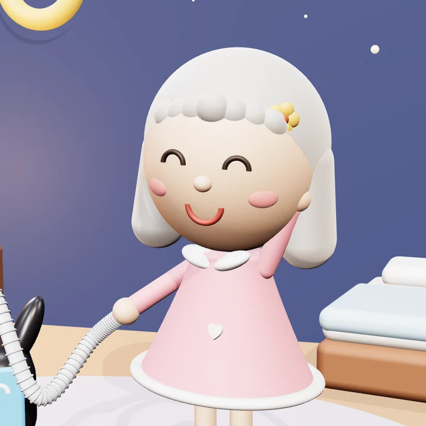
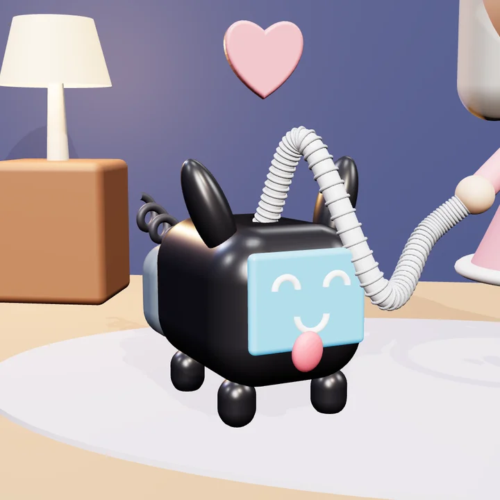

A vida que eu gosto
A vida que eu gostoSobre
Prazer, Lola e Puff
Toda boa história precisa de uma dupla. A nossa tem uma humana de verdade, um aparelho que sopra e muito café no meio do caminho.

Lola
A humana (em versão ilustrada)
A Lola é o avatar de uma mulher de carne, osso e cabelo grisalho. Um belo dia, o exame do sono revelou que, enquanto ela dormia, a respiração fazia umas pausas sem pedir licença. Nome científico: apneia do sono. Receita do médico: CPAP todas as noites.
Ela respirou fundo (o que, na época, já era um desafio) e decidiu: se é para dormir de máscara, que seja com bom humor. E resolveu contar tudo, das noites nota 10 às noites em que a bochecha virou balão, para que ninguém precise começar com o mesmo medo emprestado que ela trouxe da loja.
- Combustível
- Café com leite (descafeinado, quando necessário)
- Superpoder
- Rir dos próprios tropeços antes de todo mundo
- Ponto fraco
- Claustrofobia, por isso a máscara nasal
- Lema
- "Eu não durmo pronta. Eu me monto, uma inspiração de cada vez."

Puff
O CPAP mais fofo do mundo
O Puff era um aparelho sério, de tela e botões, até que numa noite de muita imaginação virou cachorrinho. Ganhou carinha na tela azul, língua de fora, orelhas atentas e um rabinho de fio enroladinho. A mangueira virou coleira, e ele nunca mais saiu do lado da Lola.
O nome é o som que ele faz a noite inteira: puff, um soprinho de cada vez. Ele não late, sopra. E, enquanto a Lola dorme, ele fica acordado contando os eventos por hora, como todo bom cão de guarda da respiração.
- Raça
- CPAP automático, sem pedigree, mas com umidificador
- Hobbies
- Soprar ar fresquinho e emitir o boletim da manhã
- Defeito
- Dedura: faz carinha brava quando a máscara vaza
- Virtude
- Passa a noite em claro para a Lola dormir bem
Como a dupla trabalha
Toda manhã, o Puff entrega o boletim da noite e a Lola transforma os números em história. Assim nasce o Diário do CPAP, contado noite a noite, sem esconder as difíceis. Quando aparece uma dúvida, a dupla vai atrás de diretrizes e estudos com fonte para conferir, e o resultado vira a página de Ciência. O que vai sendo aprendido no caminho fica em Aprendizados. E, porque a vida também é feita de leveza, tem figurinhas para mandar no WhatsApp.
O combinado da dupla
- Humor, sim. Deboche, nunca. A gente ri das situações, não das pessoas.
- Ciência com endereço. Toda informação de saúde vem com a fonte, para você conferir.
- Verdade, inclusive nas noites ruins. Adaptação não é linha reta, e a gente conta tudo.
- Nada à venda. Sem parcerias, sem patrocínio, sem link de loja.
- Quem manda no tratamento é o médico. A Lola conta a experiência dela; as decisões sobre o seu ficam com a sua equipe.
E quem está por trás?
A Lola e o Puff são personagens, mas a história é real. A humana de verdade por trás da Lola é a Vera, que um dia achou que dormir com uma máscara seria o fim do mundo e descobriu que era só o começo de um bom diário. As ilustrações foram criadas com o apoio de inteligência artificial, e os personagens são só nossos. Os detalhes estão no Aviso legal e privacidade.
Se você chegou aqui agora, seja bem-vindo à tripulação. Pegue um café, puxe uma cadeira e fique à vontade. Puff!